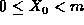
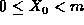
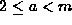
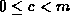
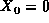
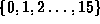
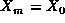
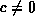
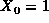
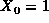

Data Structures and Algorithms
with Object-Oriented Design Patterns in C++
Data Structures and Algorithms
with Object-Oriented Design Patterns in C++In this section we consider the problem of generating a sequence of random numbers on a computer. Specifically, we desire an infinite sequence of statistically independent random numbers uniformly distributed between zero and one. In practice, because the sequence is generated algorithmically using finite-precision arithmetic, it is neither infinite nor truly random. Instead, we say that an algorithm is ``good enough'' if the sequence it generates satisfies almost any statistical test of randomness. Such a sequence is said to be pseudorandom .
The most common algorithms for generating pseudorandom numbers
are based on the linear congruential
random number generator invented by Lehmer.
Given a positive integer m called the modulus
and an initial seed value  ( ),
Lehmer's algorithm computes a sequence
of integers between 0 and m-1.
The elements of the sequence are given by
( ),
Lehmer's algorithm computes a sequence
of integers between 0 and m-1.
The elements of the sequence are given by
where a and c are carefully chosen integers such that  and .
For example, the parameters a=13, c=1, m=16 and  produce the sequence
The first m elements of this sequence are distinct and appear to have been drawn at random from the set . However since  the sequence is cyclic with period m.
Notice that the elements of the sequence alternate between
odd and even integers.
This follows directly from Equation  and the fact
that m=16 is a multiple of 2.
Similar patterns arise when we consider the elements
as binary numbers:
and the fact
that m=16 is a multiple of 2.
Similar patterns arise when we consider the elements
as binary numbers:

The least significant two bits are cyclic with period four and the least significant three bits are cycle with period eight! (These patterns arise because m=16 is also a multiple of 4 and 8). The existence of such patterns make the sequence less random. This suggests that the best choice for the modulus m is a prime number.
Not all parameter values result in a period of m. For example, changing the multiplier a to 11 produces the sequence
the period of which is only m/2. In general because each subsequent element of the sequence is determined solely from its predecessor and because there are m possible values, the longest possible period is m. Such a generator is called a full period generator.
In practice the increment c is often set to zero.
In this case, Equation becomes
This is called a multiplicative linear congruential random number generator. (For  it is called a mixed linear congruential generator).
In order to prevent the sequence generated by Equation
from collapsing to zero,
the modulus m must be prime and  cannot be zero.
For example, the parameters a=6, m=13 and 
produce the sequence
cannot be zero.
For example, the parameters a=6, m=13 and 
produce the sequence
Notice that the first 12 elements of the sequence are distinct. Since a multiplicative congruential generator can never produce a zero, the maximum possible period is m-1. Therefore, this is a full period generator.
As the final step of the process, the elements of the sequence are normalized by division by the modulus:
In so doing, we obtain a sequence of random numbers that fall between zero and one. Specifically, a mixed congruential generator ( ) produces numbers in the interval [0,1), whereas a multiplicative congruential generator (c=0) produces numbers in the interval (0,1).
 Copyright © 1997 by Bruno R. Preiss, P.Eng. All rights reserved.
Copyright © 1997 by Bruno R. Preiss, P.Eng. All rights reserved.